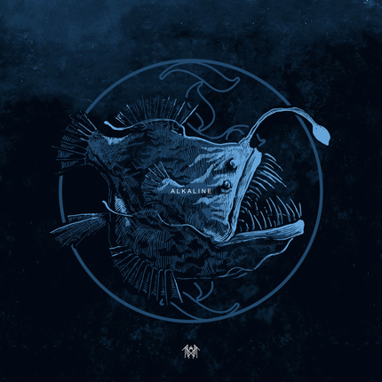

Лирически композиция затрагивает темы внутренней борьбы, зависимости от другого человека и попыток вырваться из токсичных отношений.Музыкально трек строится на плавных переходах между жанрами: от атмосферного инди-интро до агрессивного дэткор-интенсивного припева.
Образы кислотности и щёлочности («alkaline» — щёлочь) используются как метафоры для душевного баланса и нестабильности.Использование научного языка (химия, молекулы, частицы) — метафора для необъяснимых сил, которые притягивают людей.Подчёркивание уникальности — например, фраза «She's an undiscovered element» — подчёркивает, что человек обладает качествами, которые редко и ещё не полностью поняты.Вокалист (Vessel) переходит от нежного, почти шепчущего пения к мощному вокальному напору, создавая контраст между уязвимостью и яростью.